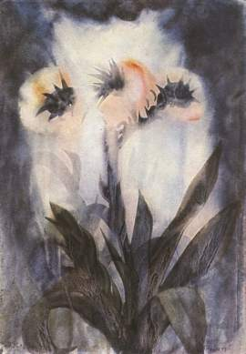

Astrologie als dieptepsychologie en zielengeneeskunde
Behalve schilder, dichter en mysticus was Max Prantl tevens astroloog. Vanuit zijn diep-geestelijke visie ontwikkelde hij een astrologie die een directe weerspiegeling is van het geestelijke wezen van de mens. Hij stelt vragen die in de huidige astrologie nauwelijks aan de orde komen - en beantwoordt ze ook: Wat is mijn door mijn diepste wezen bepaalde taak in de wereld? Hoe dien ik mij tegenover de wereld in te stellen? Welke talenten zijn mij meegegeven en in welk beroep kan ik die het beste inzetten? Wat voor karakter heeft de huwelijkspartner die met mijn diepste wezen overeenstemt? Welke karakterzwakten verminderen of belemmeren mijn levensprestatie en de geluksvervulling van mijzelf en mijn partner? Hoe kan ik deze zwakheden uit de weg ruimen? Waar leef ik aan het leven voorbij, zodat er tenslotte lege ruimten in mij en om mij heen, instortingen, psychische en uiterlijke catastrofen ontstaan? Op welk terrein van het leven ben ik onvrij, verkrampt en derhalve in gevaar? Welke levensuitingen ben ik geneigd te onderdrukken, te misvormen, te verdringen, zodat ze voor mijn ziel en lichaam verwoestend, vergiftigend en ziekmakend werken?
Daarnaast bevat het boek ook een astrologische beschrijving van het leven van Max Prantl met de horoscopisch geduide momenten van zijn verlichting en sterven. Alfred Brötz zegt hier aan het slot: 'Het 10e septair nu geeft ons informatie over de betekenis van Max Prantl. Astrologisch gezien vertegenwoordigen Saturnus en het 10e huis Michaël, de engel met het zwaard - de wachter op de drempel die het subjectieve van het bovenpersoonlijke scheidt. In Prantls 10e septair nu staat Saturnus precies aan de top van het 10e septairhuis! Zeker, we kunnen maar moeilijk begrijpen dat in hem een engel naar ons afgedaald zou zijn, maar in het licht van de getoonde horoscopen kunnen we op zijn minst vermoeden welk mysterie zich in dit leven of veeleer door dit leven voltrokken kan hebben...'.
Enkele brieven aan het eind van boek laten zien welke moeite deze 'engel' zich heeft gegeven om zijn medemensen in het dagelijkse aardse leven te bereiken en tot geestelijk ontwaken te brengen. Al met al een boek dat niet alleen voor de astrologisch geschoolde lezer een schat aan informatie, maar ook voor de 'leek' een overgrote rijkdom aan inzichten in zich draagt.
Lezen
U kunt het boek hier gratis downloaden als PDF, Word, of ePub.
Citaten
Omdat de eigenlijke mens een geestelijke werkelijkheid binnen een materieel omhulsel is, zijn ook zijn ‘lot’ en levensomstandigheden uitdrukking van zijn innerlijke wezen. Gezien onze verbondenheid met de ‘kosmos’ is het dan ook logisch dat ‘de sterren’ in hun eigen taal aangeven wat er op geestelijk terrein gaande is. Op die manier verstaan wordt de astrologie tot een ‘dieptepsychologie en zielengeneeskunde’ die ons helpt ons werkelijke, geestelijke levensdoel te bereiken. Zoals een Duits astroloog schreef: 'Slechts wie zich diepgaand in de astrologische materie heeft verdiept, kan inschatten wat voor onmetelijke geestelijke rijkdom Max Prantl ons in dit werk heeft geschonken'.
Omdat de eigenlijke mens een geestelijke werkelijkheid binnen een materieel omhulsel is, zijn ook zijn ‘lot’ en levensomstandigheden uitdrukking van zijn innerlijke wezen. Gezien onze verbondenheid met de ‘kosmos’ is het dan ook logisch dat ‘de sterren’ in hun eigen taal aangeven wat er op geestelijk terrein gaande is. Op die manier verstaan wordt de astrologie tot een ‘dieptepsychologie en zielengeneeskunde’ die ons helpt ons werkelijke, geestelijke levensdoel te bereiken. Zoals een Duits astroloog schreef: 'Slechts wie zich diepgaand in de astrologische materie heeft verdiept, kan inschatten wat voor onmetelijke geestelijke rijkdom Max Prantl ons in dit werk heeft geschonken'.